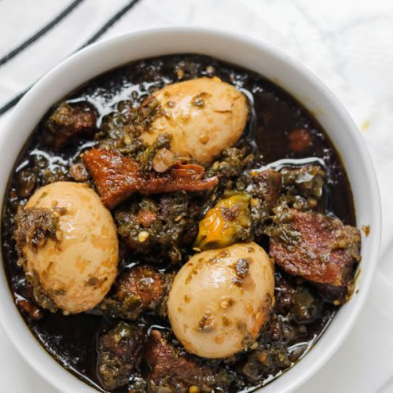

Ayamase stew recipe

Description
Ayamase stew which is also known as Ofada stew or the Nigerian designer stew is one of the numerous stew types we eat in Nigeria. This stew uses a combination of Green colored peppers together with onions and it’s spiced using indigenous ingredients such as the locust bean and this gives it a distinct delicious taste.
Ingredients
For the sauce
- 4 Green bell peppers
- 1 Large Onion
- 2 Habanero Rodo - use as much as you want
- Beef Stock as needed
- 2 Tbsps Crayfish
- 3/4 Cup Palm Oil
- 4 Boiled Eggs
- Beef stock
- Salt to taste
- 1/2 pound Beef/Tripe cut into bit size
Steps
- Rinse the Bell peppers, Onions and Habanero and cut into chunks - this will make blending process easier for the blender.
- Blend the Peppers and Onions a little at a time adding very little water while blending because the excess water is not needed.
- Pour the blended Pepper into a Pot and boil it until most of the water is gone.
- In a clean Pot, add the Palm Oil, cover it up and let it heat up on low to medium heat until the color of the Oil turns to honey-brown color.
- At this point, don't open the lid of the pot because of the intense smoke, just turn off the stove and leave it to cool or simply lift it outside for a faster cooling.
- Once the Oil is cooled down return to the stove top and let it heat up a little bit not to smoking point (uncovered this time )
- Add the diced Onions and locust bean and fry till the onions begin to float on the Oil.
- Pour in the boiled pepper, stir it all together, cover it up and allow it to cook until the oil begins to float over the pepper sauce.
- Add your choice of Meat, some beef stock to loosen up the sauce if it's too thick and Salt to taste.
- Ayamase stew can best served with serve with Ofada Rice or boiled or fried plantains, Yam, etc. Enjoy!